set.seed(1)
hist(rbeta(10000, 5, 5), ann = FALSE, col = 'blue')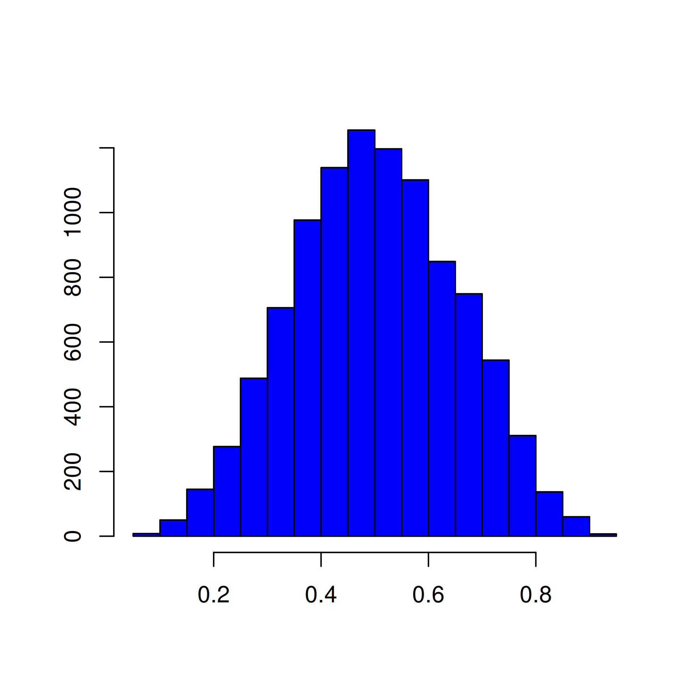
This site uses Google Analytics to find out which chapters are useful and which are not. Nothing is sent to Google and no cookies are set unless you accept. See the privacy notice.
In this chapter, we will learn to:
A histogram is a plot that can be used to examine the shape and spread of continuous data. It looks very similar to a bar graph and can be used to detect outliers and skewness in data. The histogram graphically shows the following:
To construct a histogram, the data is split into intervals called bins. The intervals may or may not be equal sized. For each bin, the number of data points that fall into it are counted (frequency). The Y axis of the histogram represents the frequency and the X axis represents the variable.
Before we learn how to create histograms, let us see how normal and skewed distributions look when represented by a histogram.
set.seed(1)
hist(rbeta(10000, 5, 5), ann = FALSE, col = 'blue')
set.seed(1)
init <- par(no.readonly = TRUE)
par(mfrow = c(1, 2))
hist(rbeta(10000, 2, 5), ann = FALSE, col = 'blue')
hist(rbeta(10000, 5, 2), ann = FALSE, col = 'blue')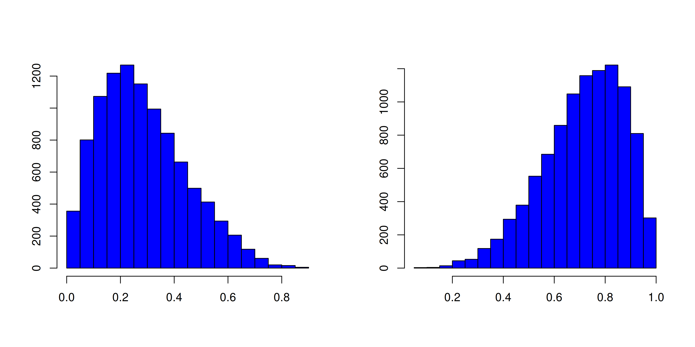
par(init)Histograms are created using the hist() function in R. The minimum input required to create a bare bones histogram is a continuous variable. Below is an example:
hist(mtcars$mpg)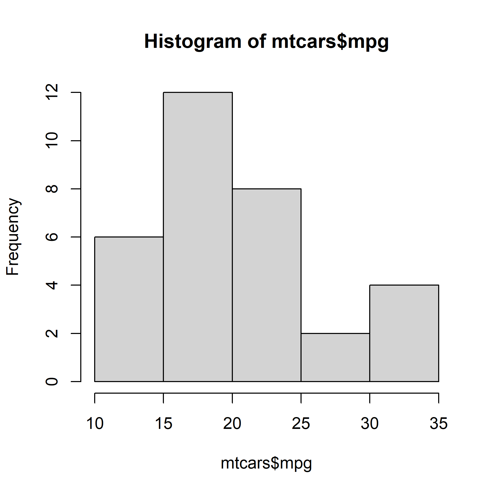
The hist() functions returns details of the histogram which can be accessed by assigning the histogram to a variable. Let us assign the above histogram to a variable h and use the $ symbol to access the details stored in the variable.
# store the results of hist function
h <- hist(mtcars$mpg)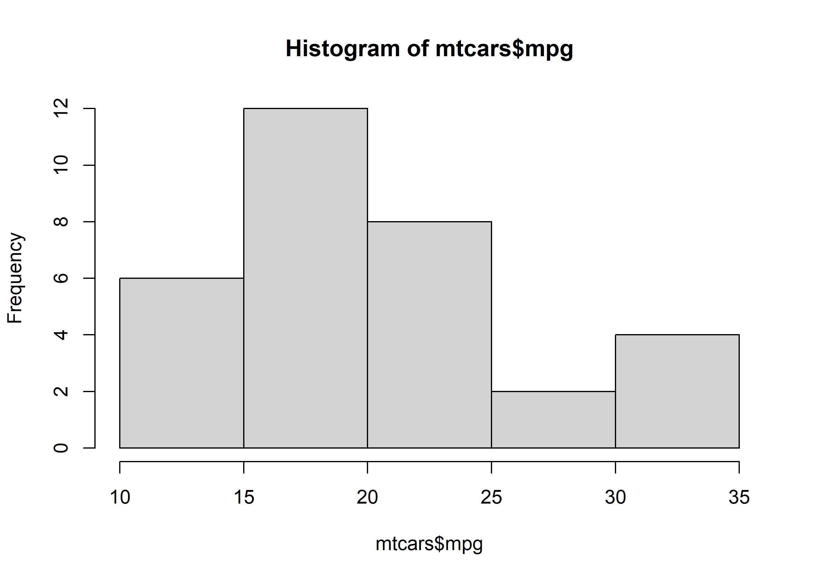
# display number of breaks
h$breaks
## [1] 10 15 20 25 30 35
# frequency of the intervals
h$counts
## [1] 6 12 8 2 4
# frequency density
h$density
## [1] 0.0375 0.0750 0.0500 0.0125 0.0250
# mid points of the intervals
h$mids
## [1] 12.5 17.5 22.5 27.5 32.5
# varible name
h$xname
## [1] "mtcars$mpg"
# whether intervals are of equal size
h$equidist
## [1] TRUEThe hist() function creates equidistant intervals by default. We can specify the number of bins using the breaks argument.
hist(mtcars$mpg, breaks = 10)
The below plot displays histograms with different number of bins:
init <- par(no.readonly = TRUE)
par(mfrow = c(2, 2))
values <- c(5, 10, 15, 20)
for (i in values) {
hist(mtcars$mpg, breaks = i)
mtext(paste("breaks = ", i), side = 3, col = "blue")
}
par(init)
If we want to create histograms with specific intervals, the breaks argument can be supplied with the intervals.
hist(mtcars$mpg, breaks = c(10, 18, 24, 30, 35))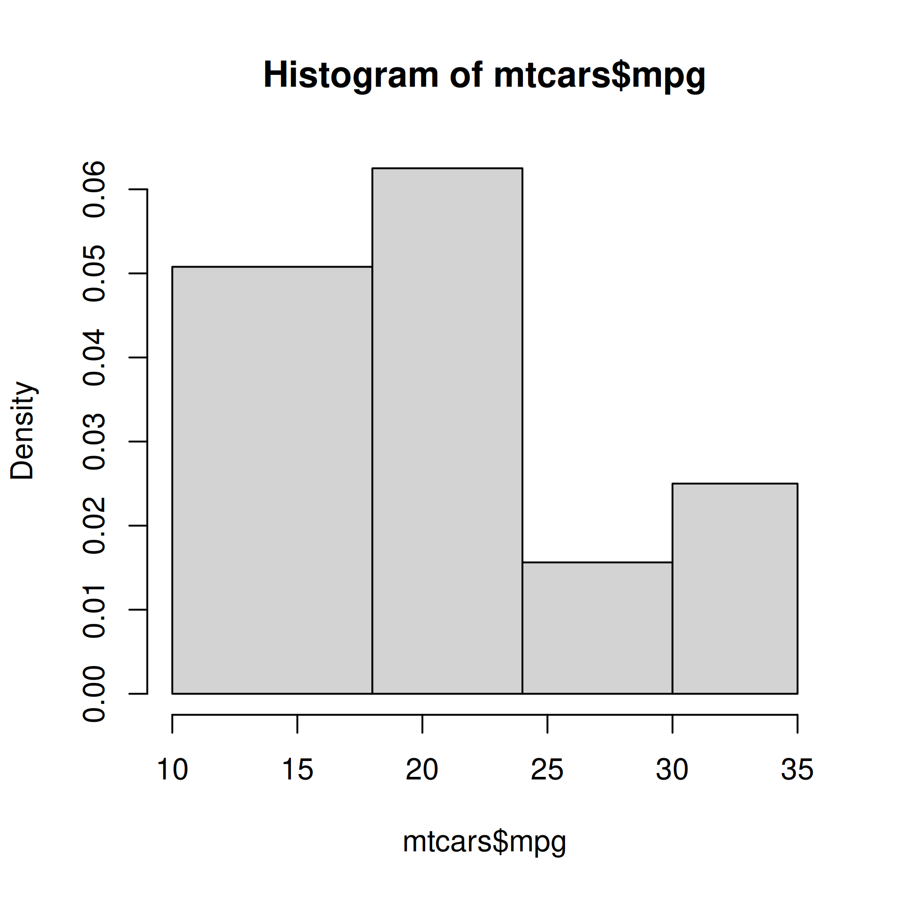
If you observe the Y axis, it does not represent frequency any more. Instead, it represents the frequency density. What is frequency density?
Frequency Density = Relative Frequency / Class Width
Relative Frequency = Frequency / Total Observations
h <- hist(mtcars$mpg, breaks = c(10, 18, 24, 30, 35))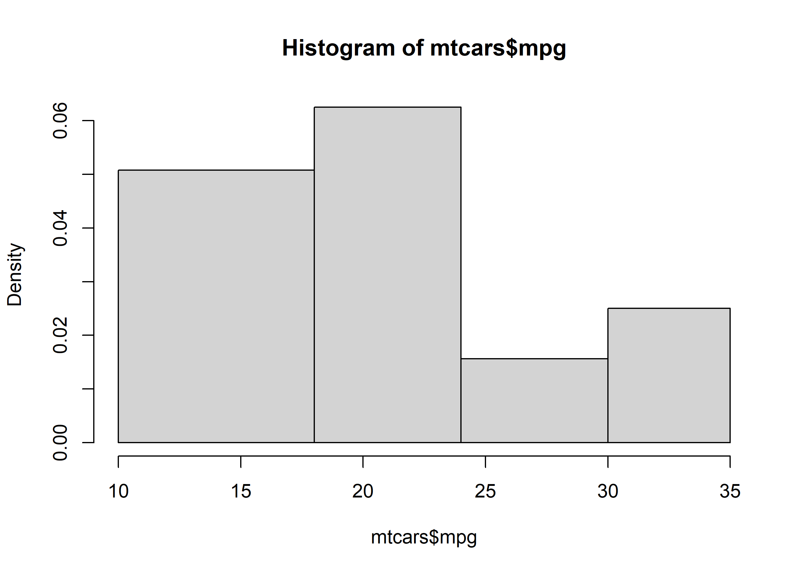
frequency <- h$counts
class_width <- c(8, 6, 6, 5)
rel_freq <- frequency / length(mtcars$mpg)
freq_density <- rel_freq / class_width
d <- data.frame(frequency = frequency, class_width = class_width, relative_frequency = rel_freq, frequency_density = freq_density)
d frequency class_width relative_frequency frequency_density
1 13 8 0.40625 0.05078125
2 12 6 0.37500 0.06250000
3 3 6 0.09375 0.01562500
4 4 5 0.12500 0.02500000When multiplied by the class width, the product will always sum upto 1.
sum(d$frequency_density * d$class_width)[1] 1We will learn more about frequency density in a bit. Before we end this section, we need to learn about one more way to specify the intervals of the histogram, algorithms. The hist() function allows us to specify the following algorithms:
In the below plot, we examine how th algorithms work:
init <- par(no.readonly = TRUE)
par(mfrow = c(1, 3))
values <- c("Sturges", "Scott", "FD")
for (i in values) {
hist(mtcars$mpg, breaks = i)
mtext(paste("algo = ", i), side = 3, col = "blue")
}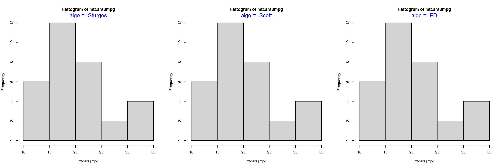
par(init)Let us come back to frequency density. If you want the Y axis of the histogram to represent frequency density instead of counts, set the freq argument to FALSE.
init <- par(no.readonly = TRUE)
par(mfrow = c(1, 2))
values <- c(TRUE, FALSE)
for (i in values) {
hist(mtcars$mpg, freq = i)
mtext(paste("freq = ", i), side = 3, col = "blue")
}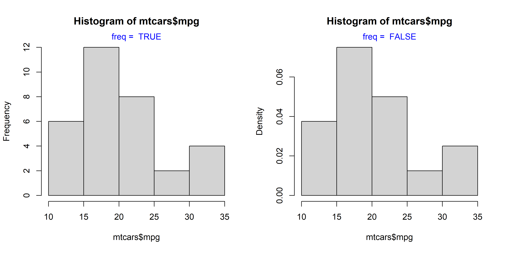
par(init)The same result can be achieved by using the probability argument as well. It takes only logical values as inputs and the default is FALSE. If set to TRUE, the Y axis will represent the frequency density instead of counts.
hist(mtcars$mpg, probability = TRUE)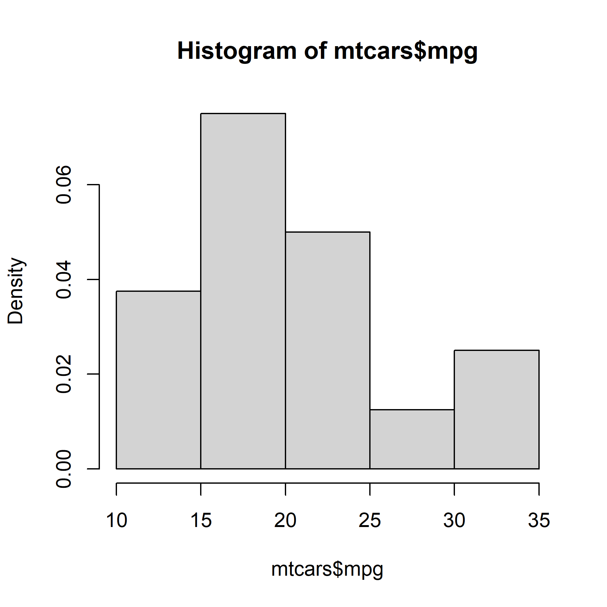
To add colors to the bars of the histogram, use the col argument. If the number of colors specified is less than the number of bars, the colors are recycled. Below are a few examples:
hist(mtcars$mpg, col = 'blue')
hist(mtcars$mpg, col = c('red', 'blue', 'green', 'yellow', 'brown'))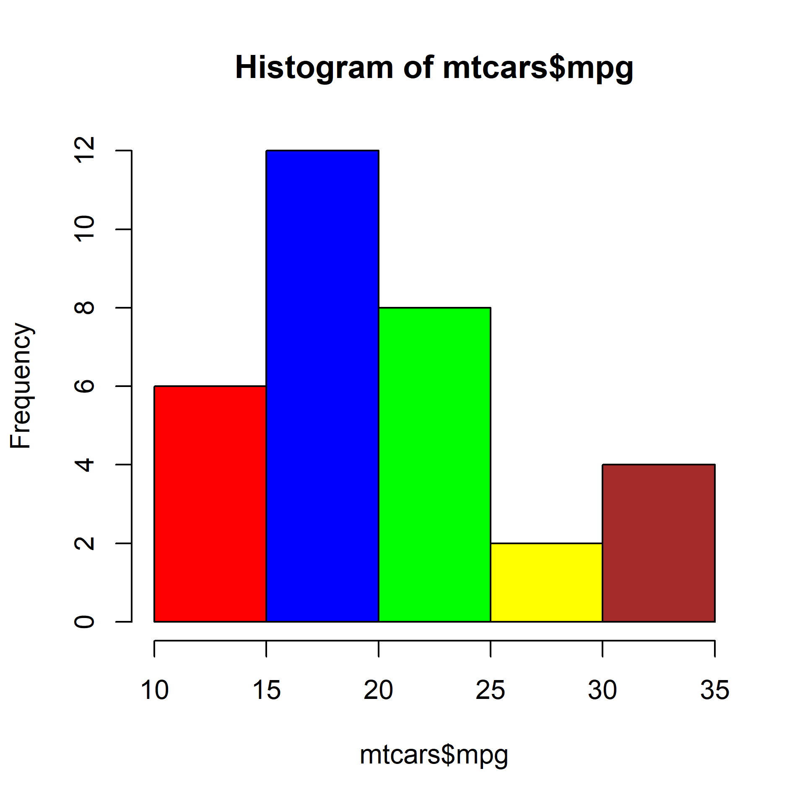
hist(mtcars$mpg, col = c('red', 'blue'))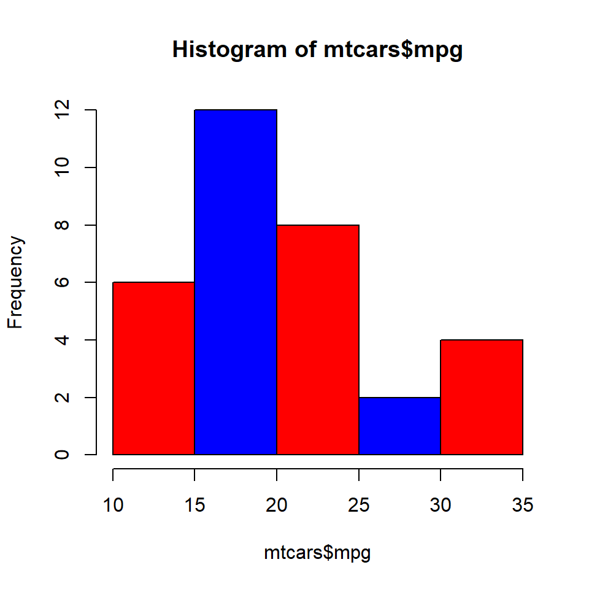
Colors can be specified for the borders of the histogrambars using the border argument.
hist(mtcars$mpg, border = 'red')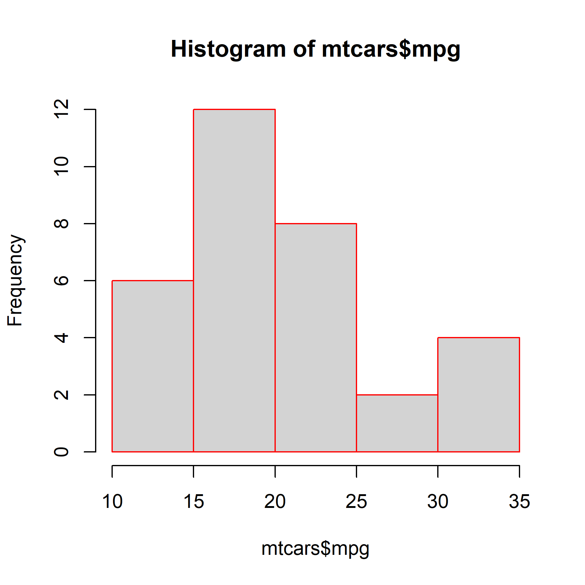
hist(mtcars$mpg, border = c('red', 'blue', 'green', 'yellow', 'brown'))
In certain cases, we might want to add the frequency counts on the histogram bars. It is easier for the user to know the frequencies of each bin when they are present on top of the bars. Let us add the frequency counts on top of the bars using the labels argument. We can either set it to TRUE or a character vector containing the label values. Let us look at both the methods.
Set labels to TRUE.
hist(mtcars$mpg, labels = TRUE)
Specify the label values in a character vector.
hist(mtcars$mpg, labels = c("6", "12", "8", "2", "4"))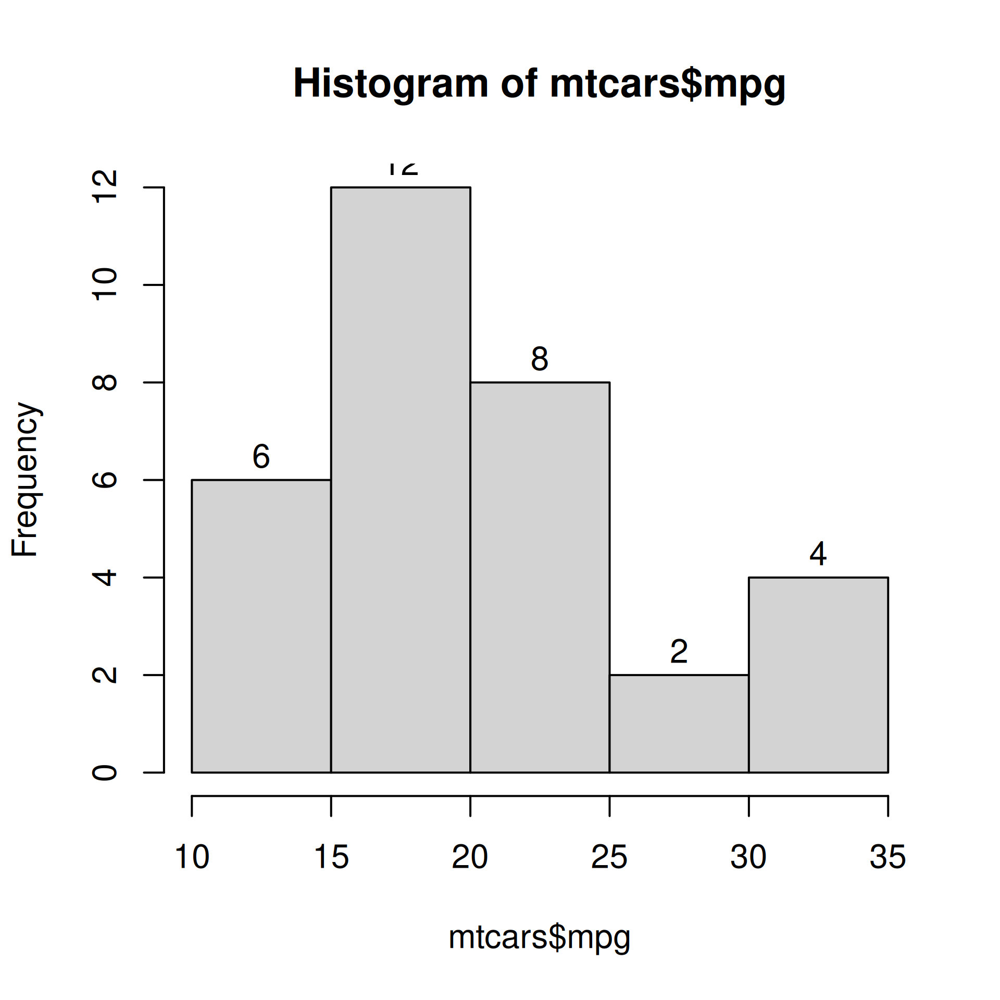
Let us add a title and axis labels to the histogram.
hist(mtcars$mpg, labels = TRUE, prob = TRUE,
ylim = c(0, 0.1), xlab = 'Miles Per Gallon',
main = 'Distribution of Miles Per Gallon',
col = rainbow(5))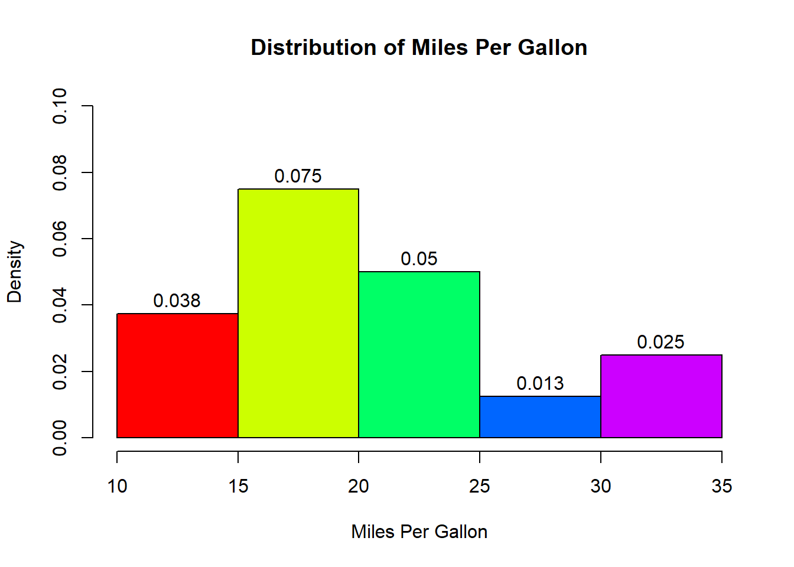